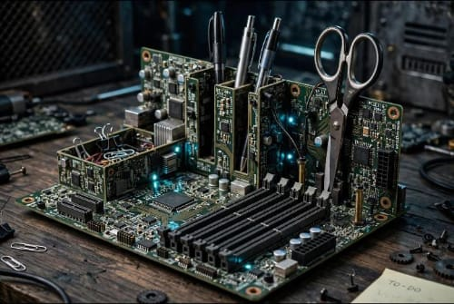

Organizer Meja dari Motherboard Bekas

Ulasan Produk: Organizer alat tulis dari motherboard bekas merupakan kreasi daur ulang yang memanfaatkan kembali motherboard rusak, slot RAM, dan kapasitor menjadi tempat penyimpanan yang kokoh. Produk ini tidak hanya berfungsi untuk merapikan meja, tetapi juga memiliki nilai estetika cyber dan industrial.
- Alat dan Bahan
- Alat
- Tang potong (1 buah)
- Amplas (2 buah)
- Bahan
- Motherboard bekas (1 buah)
- Lem besi (1 buah)
- Alat
- Langkah kerja
- Siapkan motherboard mati, bersihkan debu.
- Potong motherboard sesuai ukuran sekat yang diinginkan.
- Gunakan slot RAM sebagai tempat penjepit kertas.
- Amplas pinggiran potongan agar tidak tajam.
- Lem semua bagian menjadi bentuk organizer yang kokoh.
- Estimasi Biaya
Biaya Alat
No Nama Alat Harga 1 Tang potong (1 buah) Rp25.000 2 Amplas (2 buah) Rp10.000 Total biaya alat Rp35.000 Biaya Bahan
No Nama Bahan Harga 1 Motherboard bekas (1 buah) Rp30.000 2 Lem besi (1 buah) Rp15.000 Total biaya bahan Rp45.000 Total Keseluruhan
Total biaya: Rp80.000
Harga jual: Rp125.000
Laba: Rp45.000